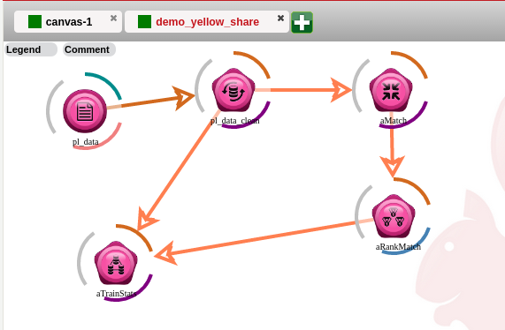

Red Sqirl is an Analysis Platform that runs in parallel with the Hadoop platform and other Hadoop Technologies. The main technologies for storage are Hive and HDFS. Hadoop is a distributed system that allows for MapReduce processes to be run over the data that is stored in these technologies.
The technologies involved in data manipulation are Pig and Hive , they can query the data and apply filters. Hive and HDFS are the storage technologies that are available. Oozie manages workflows so they can be run in parralel to other jobs. These jobs can be saved and be used again in the future. Saved jobs can be open and modified to be run with different parameters. The output of these jobs will be saved to appropriate storage facility (Hive or HDFS)

The canvas is where a workflow
is contained which is used in Red Sqirl to manage a jobs' processes or flow.
A workflow is a build up of processes that chain together and perform
corrective actions that produce a desired output. It is a way of
managing a job so that each aspect of the job can be modified to use
desired parameters.
The canvas is a graphic representation of a workflow, this will show the stages of the workflow so that it will help the user create a workflow with the right steps, at the right stage.
Actions footer is a container for tabs that holds actions that can be added to the workflow. Tabs can be created and be organized to hold certain actions.
Two kind of actions are available package actions and super actions. Package actions are held in a package and super actions in a model.
The Menu contains basic operations for manipulating workflow and projects. Options like new, save and run project can be found here. The logout button can also be found here.
This is where information can be viewed as well as different aspects of the Red Sqirl such as Oozie processes, Hadoop File System View and other informative views.